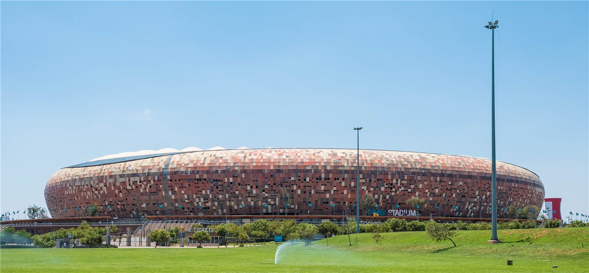

월드컵: 체코, 남아공에 후반 페널티 통한…1-1 무승부
월드컵 조별리그에서 체코가 남아프리카공화국과 1-1로 비겼다. 체코는 대회 최단 시간 골을 넣고도 종료 직전 페널티킥을 허용해 승점 1점에 그쳤다.
장입군 기자 · 2026.06.19
橋국제

자유시보와 연합보는 체코가 전반 5분 7초 만에 골을 터뜨려 이번 대회 최단 시간 득점을 기록했지만, 남아공이 종료 직전 페널티킥으로 동점을 만들며 1-1로 끝났다고 전했다.
광고 문의 · 300×250최단 골의 환희, 막판의 아쉬움
체코는 경기 시작 직후 선제골로 기선을 제압했다. 그러나 시간이 흐를수록 남아공의 압박이 거세졌고, 종료 직전 얻은 페널티킥으로 승부가 원점으로 돌아갔다.
이 무승부로 양 팀은 조별리그 첫 승을 다음 경기로 미뤘다. 체코로서는 다잡은 승리를 놓친 셈이고, 남아공은 끈질긴 추격으로 16강 가능성을 살렸다.
華橋時報는 월드컵을 화인 사회가 함께 즐기는 축제로 본다. 승부의 결과와 함께, 끝까지 포기하지 않은 경기의 묘미를 전한다.
출처·참고 (사실 확인용 — 본문은 직접 재작성)
· 자유시보(自由時報) 2026.06.19 '世界盃南非終場前點球建功 逼和捷克保住晉級希望'
· 연합보(聯合報) 2026.06.19 '世足賽捷克遭南非12碼逼平'
· 자유시보(自由時報) 2026.06.19 '世界盃南非終場前點球建功 逼和捷克保住晉級希望'
· 연합보(聯合報) 2026.06.19 '世足賽捷克遭南非12碼逼平'